Inside the canyon.
Take the road through the mesa. Run a separate crew gallery to workshops cut into the rock, with full windows, framed entrances and terraces facing the canyon.
Download the underground kit ↓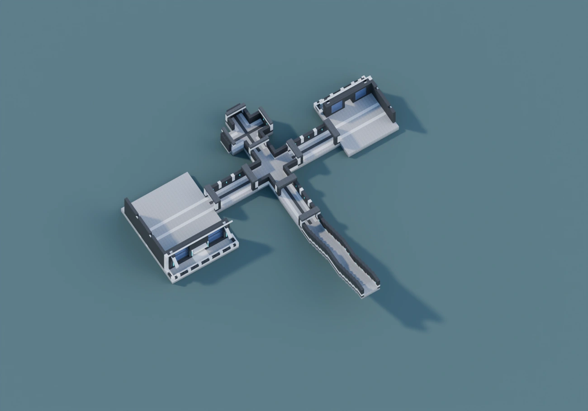
Two enclosed descents lead to the lower spine. Branches reach a compact workshop and a tall equipment hall.
Roof-off renders reveal the internal routes. The schematics and drawings include the complete lining, walls, facade and roof.
Build both levels.
Plan the lower workrooms alongside their surface departments. The example uses a surface walk at Y0 and a working level at Y−12. Set the actual heights from your mesa survey.
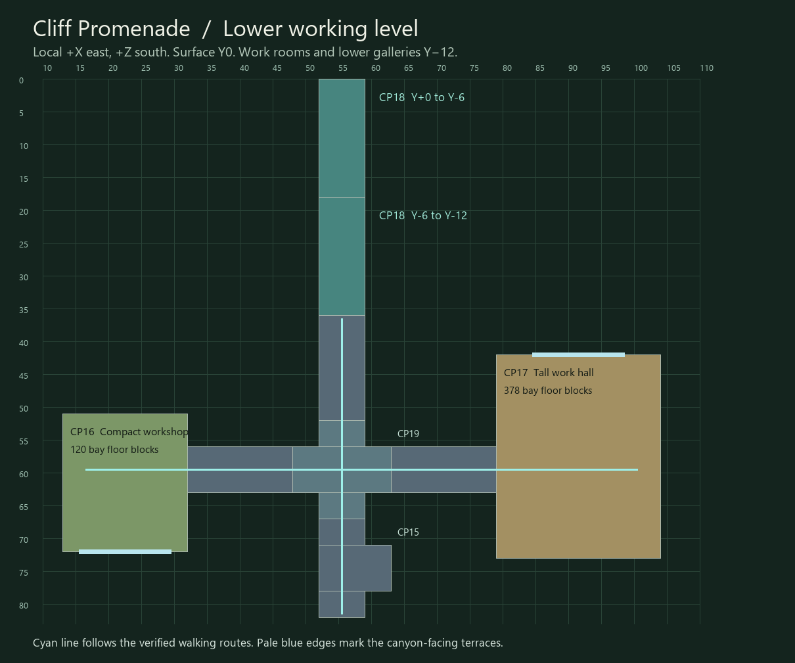
Orient the glazed sides toward a canyon face. Position the opposite wall and roof in the mesa. Each joining module uses the matching orientation and a placement origin from the register.
Give each level room to work
The workshop has two 4 × 15 bays with 7 blocks of headroom. The tall hall has two 9 × 21 bays with 10 blocks of headroom. Together those bays provide 498 floor blocks, with access aisles counted separately. For one balanced district, pair that with 12 × 10 and 21 × 18 usable work areas at the surface.
Repeat the east or south junction arm for the next department. Use a lined room for each program that benefits from the cliff-side space, with the facade facing daylight and the crew entry connecting into the mesa.
Module positions in the example
| Part | Purpose | Local origin (X, Y, Z) |
|---|---|---|
| CP18 | Enclosed gallery descent | (52, -6, 0) |
| CP18 | Enclosed gallery descent | (52, -12, 18) |
| CP14 | Crew gallery straight | (52, -12, 36) |
| CP19 | Four-way crew gallery | (48, -12, 52) |
| CP14-R1 | Crew gallery straight | (32, -12, 56) |
| CP16-R3 | Glazed cliff workshop | (13, -12, 51) |
| CP14-R1 | Crew gallery straight | (63, -12, 56) |
| CP17-R1 | Tall canyon work hall | (79, -12, 42) |
| CP15 | Crew gallery T and capped recess | (48, -12, 67) |
The built canyon face.
Recess the blue glazing behind charcoal piers. The pale ribs and cornices continue the surface facade, with thin cyan inlays and a guarded terrace outside each room.
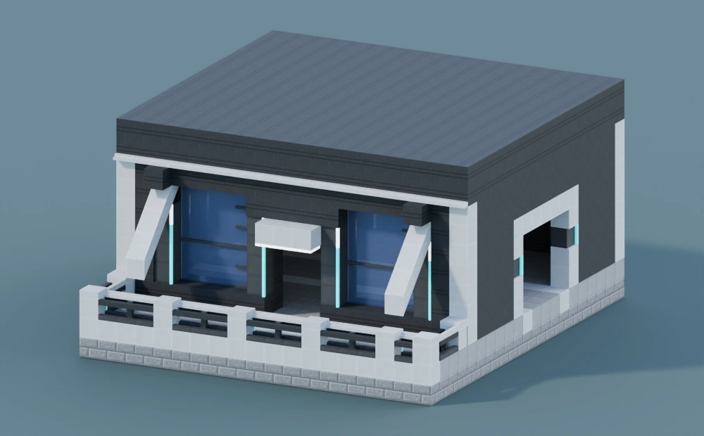
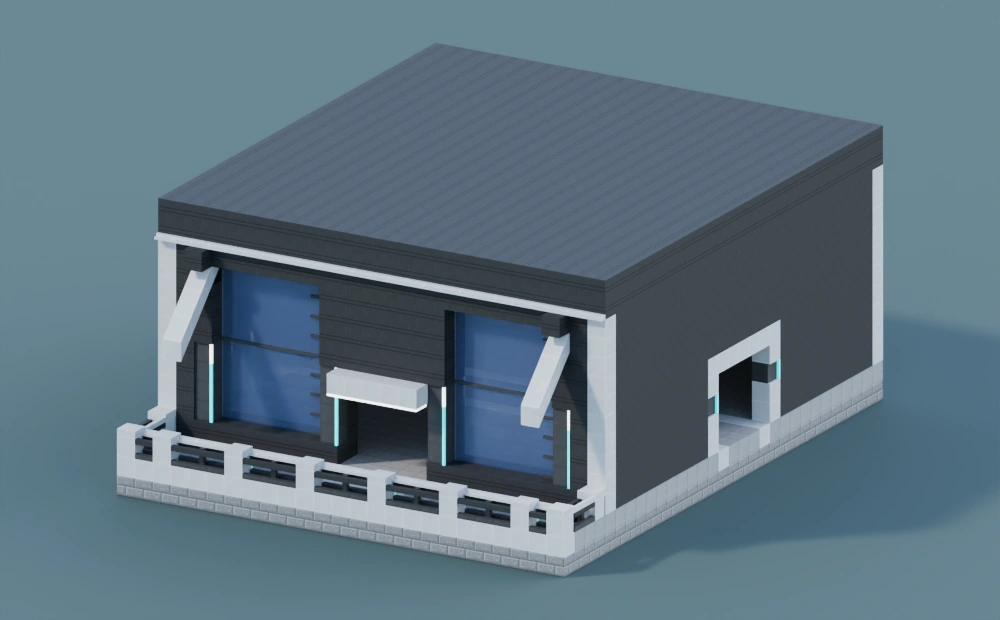
Choose an interior part.
Select a thumbnail to open its cutaway in the zoom viewer.
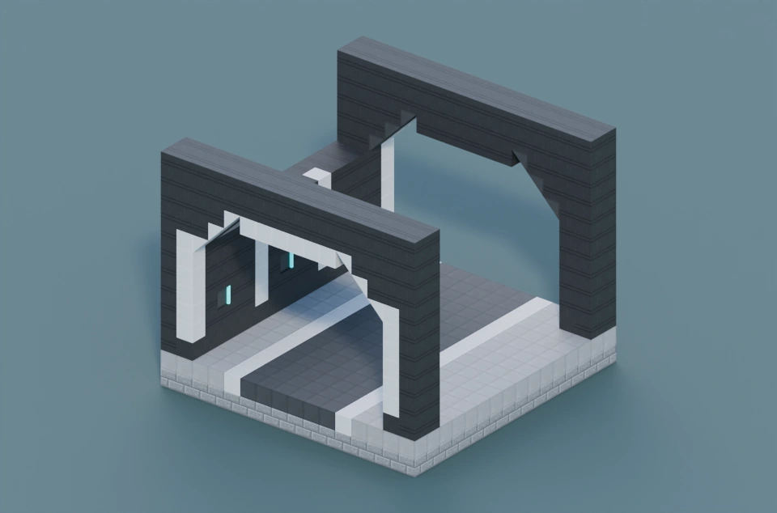
Vaulted road tunnel lining
A repeatable 16-block section cut into the canyon. Pale ribs follow the shape of the portal through the dark vault. The twelve-wide avenue and both curbs run straight through.
Placement and openings
North avenue · N · X2–13 · walk Y+0
South avenue · S · X2–13 · walk Y+0
Minimum from origin (0, -2, 0)
Build guide ↗Excavation coordinates
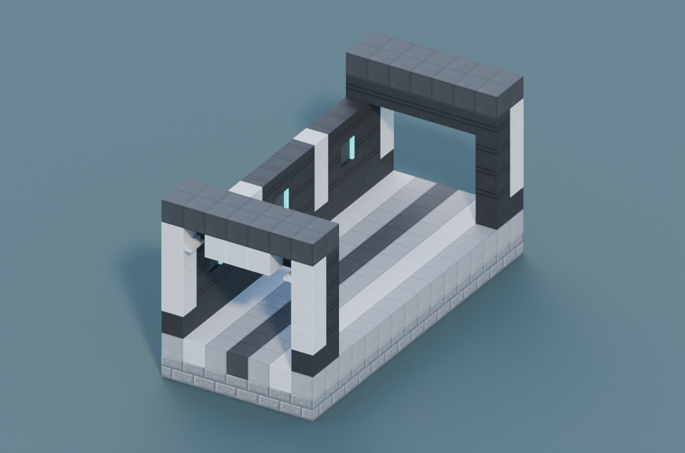
Crew gallery straight
A five-wide, four-high walk behind the canyon face. Use the charcoal lane to find the way through pale gaskets and recessed lighting to the next workshop.
Placement and openings
North crew gallery · N · X1–5 · walk Y+0
South crew gallery · S · X1–5 · walk Y+0
Minimum from origin (0, -2, 0)
Build guide ↗Excavation coordinates
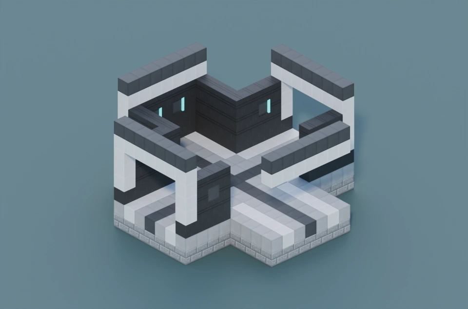
Crew gallery T and capped recess
A pale-framed three-way junction with a short capped recess. Four-high clear paths follow the stripe north, south and into the east branch.
Placement and openings
North crew gallery · N · X5–9 · walk Y+0
South crew gallery · S · X5–9 · walk Y+0
East crew gallery · E · Z5–9 · walk Y+0
Minimum from origin (0, -2, 0)
Build guide ↗Excavation coordinates
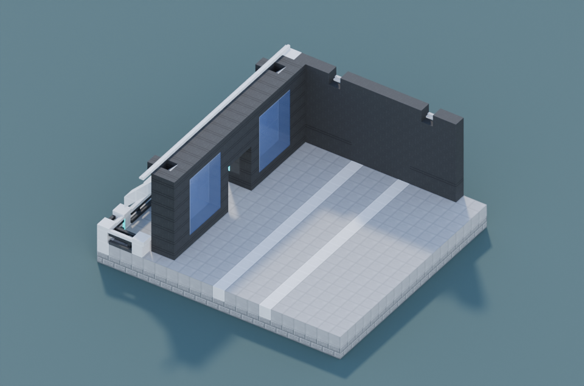
Glazed cliff workshop
A fully lined 17 × 19 chamber with 7 blocks of clear interior height. Set the recessed glazed wall and guarded terrace into an east-facing mesa cut.
Placement and openings
Crew corridor · N · X6–10 · walk Y+0
Minimum from origin (0, -2, 0)
Build guide ↗Excavation coordinates
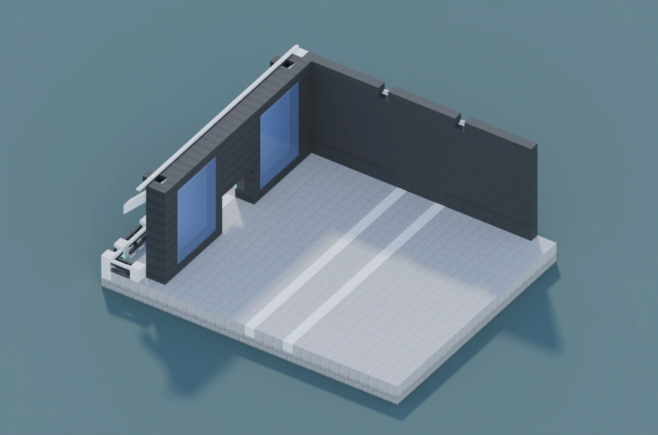
Tall canyon work hall
A fully lined 27 × 25 chamber with 10 blocks of clear interior height. Set the recessed glazed wall and guarded terrace into an east-facing mesa cut.
Placement and openings
Crew corridor · N · X11–15 · walk Y+0
Minimum from origin (0, -2, 0)
Build guide ↗Excavation coordinates
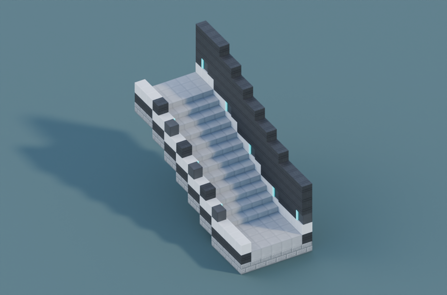
Enclosed gallery descent
A five-wide, roofed stair drops six blocks between galleries. Stone footings carry Agon half-steps under pale cornices and white underlights.
Placement and openings
Upper gallery · N · X1–5 · walk Y+6
Lower gallery · S · X1–5 · walk Y+0
Minimum from origin (0, -2, 0)
Build guide ↗Excavation coordinates
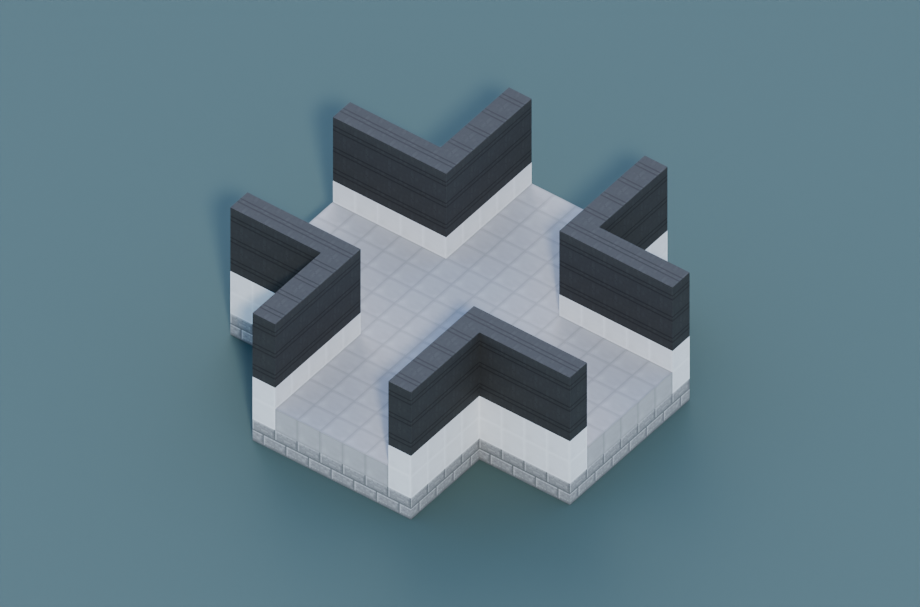
Four-way crew gallery
Four five-wide passages meet under a molded crossing ceiling. Each arm carries the same pale skirt and dark wall lining.
Placement and openings
North gallery · N · X5–9 · walk Y+0
South gallery · S · X5–9 · walk Y+0
East gallery · E · Z5–9 · walk Y+0
West gallery · W · Z5–9 · walk Y+0
Minimum from origin (0, -2, 0)
Build guide ↗Excavation coordinates